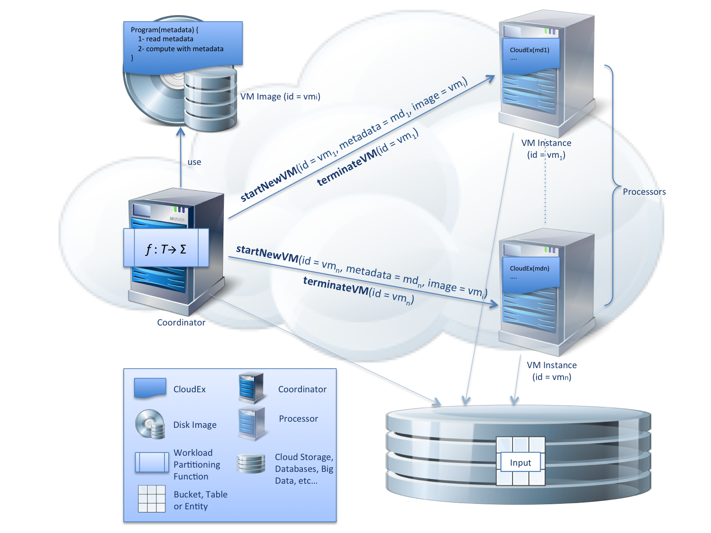

What is CloudEx?
Traditionally when executed on fixed clusters, tasks need to be tailored to fit the available computing resources (memory, CPU, disk size, etc...). With cloud computing the computing resources can be tailored to fit the tasks instead. CloudEx is a framework for executing jobs on cloud virtual machines. You can use the CloudEx framework to dynamically provision ephemeral computing resources to fit the tasks in hand.
Imagine you have a computational job which can be broken down into a sequence of tasks, some of which are memory intensive, others are CPU intensive or both. Other tasks are neither memory nor CPU intensive, but are used for forking and joining work. CloudEx executes such a job on the cloud by acquiring various worker VMs — called processors — with different specification to execute the tasks and deletes them once the job is done. You can statically declare the VM specification to execute each task or drive it dynamically during the job execution. The following two cloud features makes it possible for CloudEx to dynamically acquire heterogeneous and ephemeral cloud-based clusters:
- Short VM startup time - this enables CloudEx to dynamically acquire VMs during job execution.
- Per-minute billing - this enables CloudEx to delete the VMs once the job is done, without incurring unnecessary cost.
- Implement each of the tasks in your job as a separate class that extends CommonTask
- Create a VM image that contains your custom tasks and the CloudEx framework. The image building process is different for each cloud provider.
- Define your job in JSON as explained in the example below.
- Run the Coordinator component locally or on its own VM. You obviously need to authenticate it so that it can interact with the cloud provider's APIs.
- The Coordinator will run the job by starting the required processors, each processor runs the Processor component. Once the job is done the coordinator deletes the processors.
CloudEx architecture
CloudEx uses a coordinator component to facilitate the execution of jobs in the cloud. The coordinator can be run locally, on a VM or a remote server. The coordinator component acquires processors (VMs) to execute a job. Each processor can interact with other cloud services like storage and databases to retrieve its input data. The coordinator uses the cloud provider's metadata to instruct the processors to execute particular tasks. The processors do not communicate with each other, but they update their metadata to indicate when the current task is completed, which is then read by the coordinator. Once the job is done the coordinator deletes these processors. The high level architecture is shown below:  Jobs are defined as a sequence of embarrassingly parallel tasks. Each task can be executed by the coordinator or multiple (1 to n) processors. CloudEx provides an implementation of the Bin Packing algorithm that users can use to distribute the workload for processor tasks. Each processor task can define the specification (disk, memory and CPU cores) of the VM on which it should be executed. The number and the specification of the processors that execute each task can either be defined statically in the job JSON definition or driven dynamically during the job execution.
Show me an example
Imagine you have a job that processes a number of video files to extract some data then builds a catalogue in memory before saving it to a disk. The task to process the videos is CPU intensive and can be distributed. On the other hand the task to build the catalogue is memory intensive and needs to be processed on a single VM. Assuming we are using the Google Cloud Platform, a CloudEx job can be defined as follows:
We will explain each of the major parts of the job definition. More details are provided in the documentation:- data - this section defines some static data that can be referenced in the task definitions. This initial data is added to the job Context, a collection of key value pairs that can be provided as input to tasks.
- vmConfig - this section defines the default VM specifications for the processors.
- task - this section defines an array of tasks to be executed sequentially.
- ForkVideoProcessingTask - this task is executed by the coordinator, reads the details of the video files from a cloud storage bucket, the name of which is read from the job context (value prefixed with # such as '#bucket' are read from the job config). The task outputs a
videoItemsarray. Additionally, this task uses some algorithm to determine the number of processors to use and outputsnumberOfProcessorsvalue, say 16. BothvideoItemsand arenumberOfProcessorsadded to the job context. - ProcessVideosTask - this task is executed by the processors. The coordinator will start 16 VMs using the vmConfig mentioned above, each VM has 32 cores. The
BinPackingPartitionfunction is used to divide thevideoItemsequally (approximately) between them. The coordinator will wait for all the processors to finish before continuing with the next task. The variables in theinputare passed to the processors using VM metadata. Each processor runs this task utilising all 32 CPU cores to extract some stats, information, etc... from these videos - JoinVideoStatsTask - this task is executed by the coordinator and joins the information produced by the processors. It them outputs an array of
catalogueItems. - AssembleCatalogueTask - this task is executed by a single processor as specified by the
partitioningfunction. For this task custom VM config is specified, so the coordinator wil start a VM which has 208 GB of memory and a 400GB SSD. This processor then builds the catalogue in memory, serialises it to disk and uploads it to cloud storage.
Getting Started
Checkout the Getting Started section on GitHub.
Documentations
To find out more about CloudEx, check out the documentation.
Contributing
See the CONTRIBUTING Guidelines.
License
Apache 2.0 - See LICENSE for more information.